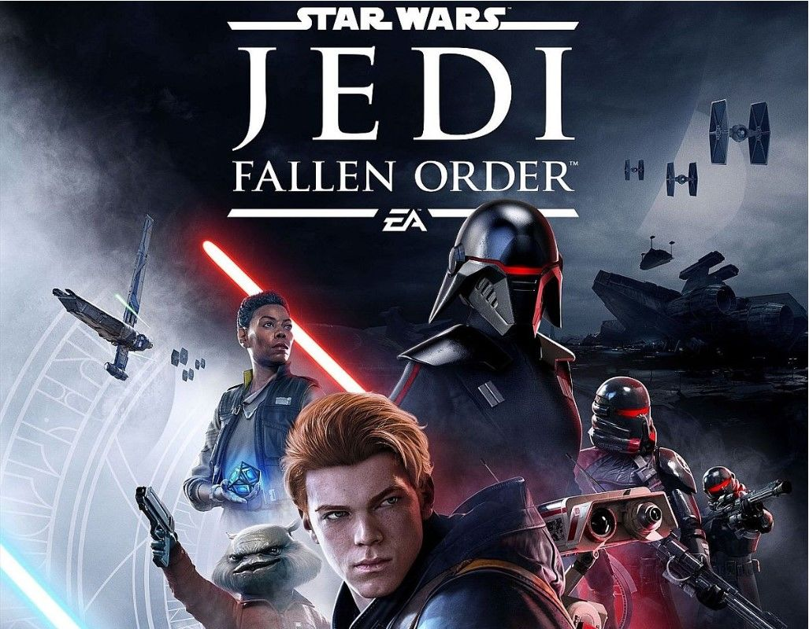
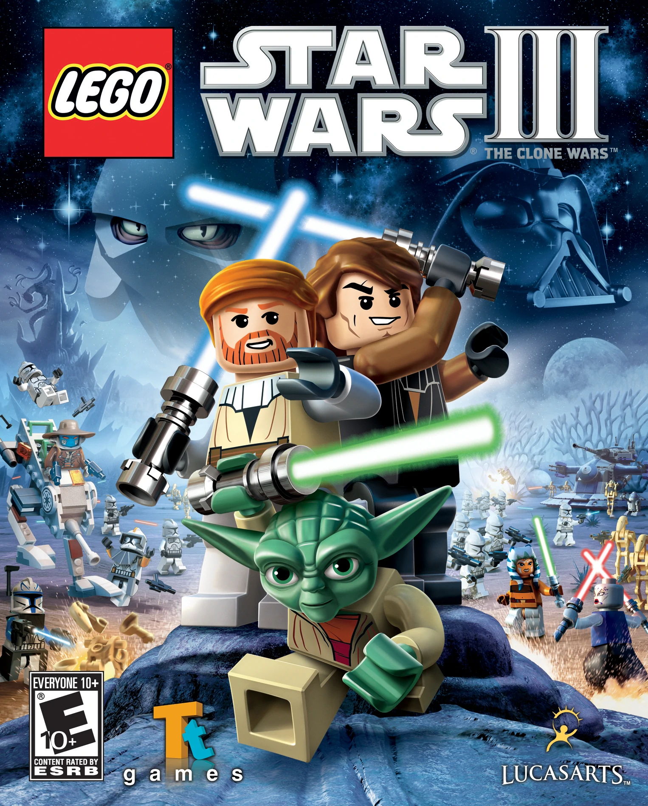
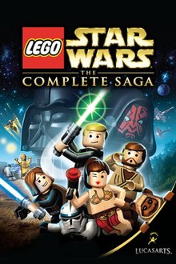

Lego Star Wars: Die Skywalker Saga ist ein Action-Adventure-Computerspiel,
das von Traveller's Tales entwickelt und von Warner Bros.
Interactive Entertainment für Microsoft Windows, Nintendo Switch, PlayStation 4,
PlayStation 5, Xbox One und Xbox Series X/S am 5. April 2022 veröffentlicht wurde.
Lego Star Wars: Die Skywalker Saga ist ein Action-Adventure-Computerspiel,
das von Traveller's Tales entwickelt und von Warner Bros.

Star Wars: Battlefront ist eine im Star-Wars-Universum
angesiedelte Computerspielreihe des Shooter-Genres.
Sie wurde ursprünglich von Pandemic Studios entwickelt,
später allerdings von anderen Studios übernommen.

Star Wars Jedi: Fallen Order ist ein Action-Adventure-Computerspiel,
das von Respawn Entertainment entwickelt und von Electronic Arts am 15.
November 2019 für Microsoft Windows,
PlayStation 4 und Xbox One veröffentlicht wurde.

Lego Star Wars III: The Clone Wars ist ein Action-Adventure-Computerspiel,
das von Traveller’s Tales bzw. TT Fusion entwickelt und von LucasArts bzw. F
eral Interactive für Microsoft Windows, macOS, Nintendo 3DS, Nintendo DS, PlayStation 3,
PlayStation Portable, Wii und Xbox 360 im Jahr 2011 veröffentlicht wurde.

Lego Star Wars: Die komplette Saga umfasst alle drei Episoden der Original-
sowie der Prequel-Trilogie von Star Wars. Jede Episode setzt sich aus sechs
(5 in der DS-Version) verschiedenen Leveln zusammen, wodurch das Spiel insgesamt 36
(30 in der DS-Version) Level enthält. Es gibt keine festgelegte Reihenfolge, in der
die Episoden gespielt werden müssen, mit Ausnahme des allerersten Levels.
Nach Abschluss des ersten Levels sind alle Episoden von Anfang an verfügbar,
wodurch der Spieler selbst entscheiden kann, welche er zuerst spielt.